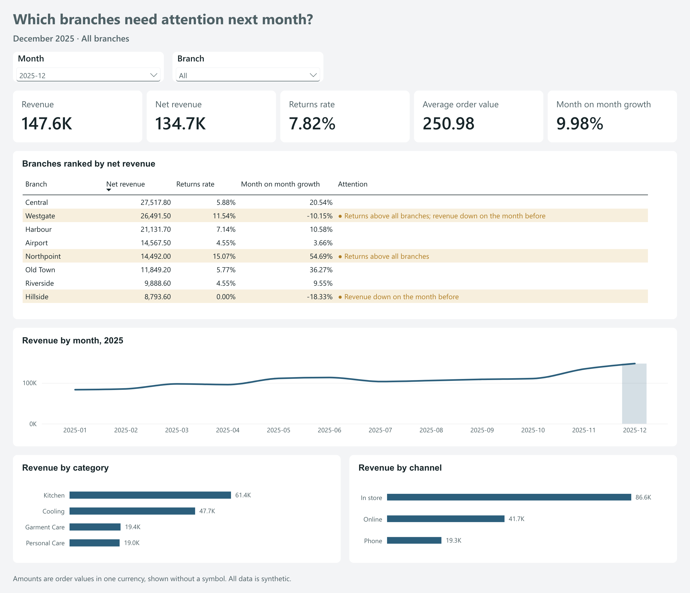
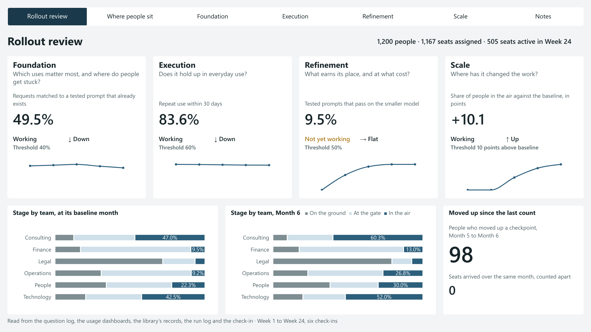

Dashboards
Views a team makes a decision from, each number checked against answers written before the view was built. Each one opens on its decision and reads it one part at a time.
The data is synthetic. Branch review's table also answers typed questions on AI Work; Rollout review puts two frames from Frames into numbers.
About 3 minutes, one try at each stop.
Two dashboards, at a glance
Which branches need attention next month?
For: an operations lead at the month-end review, choosing where to look first.
- Decision
- which branches need attention next month
- Reads
fct_orders, the tested table under data answers- Built in
- Power BI, published to the web, no sign-in
One table, two readers: the dashboard and the data answers assistant read the same tested table with the same definitions, and a recorded check proves they give the same numbers. The record is below.
Open the dashboardthe live report, no sign-in: pick a month or a branch
The page, one part at a time

- The five cards
How did the month go across all branches?
It feeds: It sets the bar every branch is judged against.
December: 147,575.80 revenue, 7.82% of orders returned, up 9.98% on November.
- The branch table
Which branches fall short of that bar?
It feeds: The shortlist for next month's attention.
Three of eight marked amber: Westgate, Northpoint and Hillside.
- Revenue by month
Is it one month, or a pattern?
It feeds: Whether to act now or keep watching.
December is the highest of the twelve months, after five rises in a row.
- Revenue by category
Where in a branch does the revenue come from?
It feeds: Which kind of product to look at first.
Kitchen brings 41.60% of December's revenue; pick a branch and this follows.
- Revenue by channel
Through which channel does it come?
It feeds: Whether the fix belongs in store, online or by phone.
In store takes 58.70% of December's revenue, Phone the least.
The amber mark, in plain words: A branch is marked amber when more of its orders came back than across all branches, or its revenue fell on the month before. The mark says where to look first, not what went wrong.
The picture is the report as published, kept here so the page still shows the work if the live link stops. Open the dashboard to use it live.
The record
From check D202611082324-ebdafcd, on the report as committed: the model check passed and 14 of 14 questions matched, with no miss.
Every question the dashboard can answer was asked of it, and each answer was compared with the one the data answers assistant is tested on.
What the check leaves out, and why
A question the dashboard cannot answer is left out and named, never counted as a pass.
- A08, A13, A15, A16. A metric with no measure on this page (
revenue_share,largest_order,qoq_growth,orders_share). - A17, A18.
compare_periods: a comparison the assistant builds, with change columns the page has no measure for. - R01, R03, R04, R06. A gate: the right answer is a refusal, with no number.
- R02, R05. A gate first; the number after it repeats a kind of question already counted.
- S01. The same question as A02.
- S02. Assumes batch 2 is loaded; the dashboard shows
export_batch1 only.
The definitions
Each measure in the report, with the definition it carries, copied from the assistant's own list.
ordersCount of orders placed in the period, returned or not.returnsCount of orders placed in the period that were later returned.revenueSum of the order value of every order placed in the period, before returns.returned_valueSum of the order value of the orders placed in the period that were later returned.net_revenueRevenue minus returned value: the order value of the orders placed in the period that were not returned.returns_rateReturns divided by orders, as a percent: the share of orders placed in the period that were later returned.average_order_valueRevenue divided by orders: the mean order value of the orders placed in the period.mom_growthRevenue in the month minus revenue in the month before, divided by the month before, as a percent. The period must be one month, and January has no month before it in the data.
Where to look in the code
- fct_orders.tmdl The measures as the report holds them, each with its definition as its description and its format.
- dashboard/agreement.dax The query that runs the dashboard's own measures on every question it can answer.
- scripts/check_dashboard.js The check: the report's files first, then every value against the expected answers. It runs on every push.
- results/dashboard The check's records, each naming its commit, every miss and every question left out.
- fct_orders.sql The tested table the report reads, built from the raw export and checked by tests before anything reads it.
- metrics.json The definitions both readers share, each with its unit.
- eval/expected/cases.json The expected answers, generated from a seed before the assistant's first run.
- dashboard/DESIGN.md The design note: the reader, the decision, every measure and why it is written that way.
Is the rollout working?
For: the person running an AI rollout, deciding each week where the effort goes next.
- Decision
- which stage and which team get the effort next
- Reads
- five sources: the question log, the usage dashboards, the library's records, the run log and the check-in
- Data
- synthetic, from a seeded generator: 1,200 people, six teams, 24 weeks, six check-ins
Two frames, in numbers: one page for each stage of FRAME-04, and a count of where people sit on FRAME-01's nine checkpoints, placed twice: by their own check-in and by the sources. Read side by side, the two views show which lever fits each team. The record is below.
Open the dashboardthe live report, no sign-in: all seven pages
The report, one finding at a time

- The four stage tiles on Rollout review
Which stage is not working yet?
It feeds: Which stage gets the effort first.
Refinement alone: 9.5% of prompts pass on the smaller model in the run log.
- Check-in against source on Where people sit
Where does each view place Finance?
It feeds: Which lever each team gets next.
Check-in: many at Takeoff. Sources: Waiting to board. Lever: a recurring weekday task.
- Questions by month on Foundation
Are people asking what is allowed, or about the work?
It feeds: Whether to keep answering rules questions or build for the work.
Question log: rules questions fall from 52 in month 1 to 16 in month 6.
- Pass on a smaller model on Refinement
What earns its place, and at what cost?
It feeds: Which prompts can move to the smaller model.
Run log: LIB-09 and LIB-13 pass on the smaller model, at half the tokens.
- Taken up beyond the first team on Scale
Where has it changed the work?
It feeds: Which prompts to offer the next team.
Library's records: LIB-01, made by Consulting, taken up by Technology from Week 7.
The verdict, in plain words: A stage reads Working when its figure meets the threshold printed under it, and Not yet working when it does not. The thresholds are illustrative: a real programme sets its own.
The pictures are the report as published, kept here so the page still shows the work if the live link stops. Open the dashboard to use it live.
The record
From the recorded check in CHECK.md, on the report as published: 18 of 18 questions matched, with no miss.
Every question was answered from the tables by a script first, then read off the report and compared, one by one.
The five sources
Each table stands in for a live system, so a real rollout swaps in an export with the same columns.
- The question log. One row per question asked: who asked, what it really was, how hard it was, and what was done. Stands in for an office hours or help channel log.
- The usage dashboards. Each person's active days, sessions and runs, week by week. Stands in for the platform's admin export.
- The library's records. Each tested prompt's owner, version, limits and test result, and its runs by team and week. Stands in for the library's run log.
- The run log. What each test run cost in tokens and how many of its cases it matched, on the standard and the smaller model. Stands in for the test harness output.
- The check-in. FRAME-01's questions, answered by each person each month, ending with the checkpoint they place themselves at. Stands in for a check-in form.
- Beside them. A training register and a roster say who attended which session and who holds a seat.
The planted storylines
Synthetic data with nothing in it gives pages with nothing to say. These storylines were planted in the data by the generator, and each stop of the read above is one of them.
- Legal. Seats arrive first, in week 1, but most people stay at Ticket held across all six counts. The lever is a first task done side by side with someone who already uses AI.
- Finance. The check-in places many people at Takeoff, while the sources place them at Waiting to board, active only in reminder weeks. The lever is one recurring task tied to a day of the week.
- Operations. Repeat Summarising questions stop once a library item for that use is published in week 12, and people move up at the next count.
- Technology. Two items pass on the smaller model at half the tokens. One item is retired and one merged in month 5.
- Consulting. Broad, steady adoption with the highest library share, and the first item taken up by a second team. This is the benchmark team.
- Every team. Questions about Rules and allowed use fall month on month, from 52 in month 1 to 16 in month 6, so the ranked uses on the Foundation page change over the period.
- People. Sits in between, with no planted story.
Where to look in the code
- mjazzly/rollout-review The whole build: the generator, the tables, the check and the report.
- README.md What it is, the planted storylines, and how to rerun it.
- generate.py The seeded generator that writes every table.
- check.py The check: answers every question straight from the tables.
- CHECK.md The questions, the expected answers and the match record, question by question.
- measures.md Every measure and placement rule, worded as the report carries it.
- DICTIONARY.md Every table and column, and the live system each stands in for.
- DASH-02-DESIGN.md The design note: the reader, the pages, and what was kept out on purpose.
- report The report's own files, page by page.
The words on this page
Every term used on this page, in plain words.
- Dashboard. One page of numbers and charts that a team reads to make a decision.
- Measure. A named calculation in the report, such as revenue or returns rate. Each one here is named after a metric and carries its definition.
- Metric. A number with a written definition, a unit and the ways it may be split. The assistant and the dashboard share one list of them.
- Tested table. A table built in code from the raw export and checked by tests before anything reads it.
fct_ordersholds one row per order. - Export batch. One delivery of rows from the source. The dashboard shows the first batch only, the rows the live assistant reads.
- Net revenue. The order value of the orders that were not returned.
- Returns rate. The share of orders placed in the period that were later returned.
- Month on month growth. The change in revenue from the month before, as a percent of the month before.
- Agreement check. The dashboard's own measures run on the assistant's test questions, each answer compared with the expected one, value by value.
- Expected answer. The right answer to a test question, generated from a seed with the data, before any run.
- Gate. A point where the assistant must stop or refuse instead of giving a number. A question whose right answer is a refusal has no number to compare. Also called a guardrail.
- Relationship. A join between two tables in a report. With one table there are none, so no number can be counted twice through one.
- Publish to web. Power BI's public link: anyone with it can view the report, with no sign-in.
- Slicer. A control on the report that picks what every part shows: here, the month and the branches.
- Rollout. Putting a tool in front of a group of people and helping them use it.
- Stage tile. One of the four tiles on Rollout review's front page: a stage of the rollout, its headline figure, its verdict and its trend.
- Threshold. The figure a stage tile must meet to read Working. Here the thresholds are illustrative; a real programme sets its own.
- Checkpoint. One of nine marks of where a person stands with AI at work, from No ticket to Frequent flyer, three in each stage of the adoption flight.
- Check-in. A short set of questions each person answers each month, ending with the checkpoint they place themselves at.
- Source placement. The checkpoint the sources put a person at, by stated rules over the weeks before the check-in.
- The gap. The report's name for a person's own checkpoint set beside the one the sources give: higher, level or lower. Read side by side, the two show which lever fits.
- Baseline month. For each team, the first check-in whose eight weeks before it all fall after the team's seats arrived: the start the latest month is measured against.
- Moved up. People who held a seat at both counts and sit at a higher checkpoint by the sources at the later one. Seats that arrived in between are counted apart.
- Tested prompt. A written request checked against cases before anyone relies on it. The library is the one shared place where they are kept.
- Smaller model. A lighter, cheaper model tier. A prompt that passes all its cases on it can move there.
- Tokens. The units a model reads and writes. Here they stand in for cost, so nothing is counted in currency.
- Cost index. Tokens per run on the standard model over tokens per run on the smaller one, for the same prompt.
- Planted storyline. A pattern the generator writes into synthetic data on purpose, so the pages have something to show.
- Seeded generator. A script that writes the synthetic data from a fixed starting number, so every rerun gives the same tables.
Two dashboards, each with its record beside it.